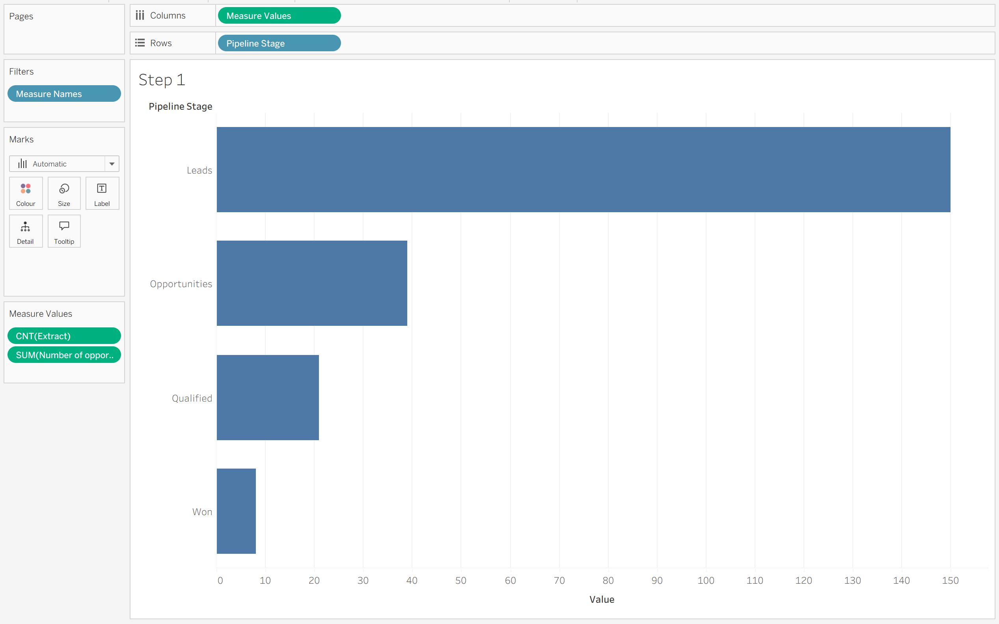
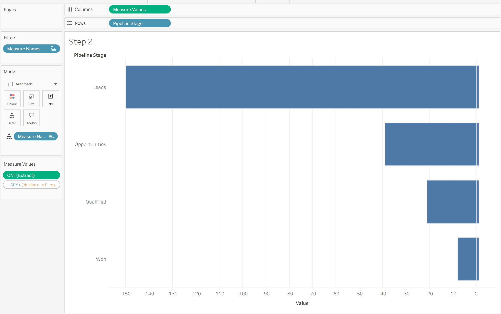
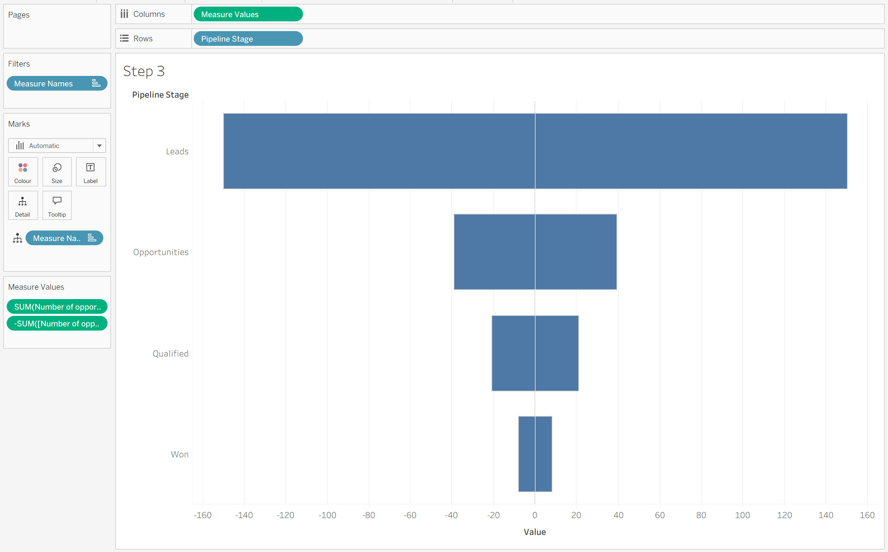
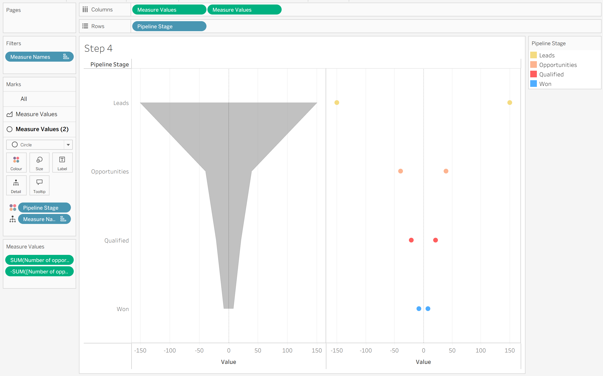

Hey Tableau Community! 👋 If you’ve taken a look at my Visual Vocabulary, you’ll know how much I love using different chart types to effectively tell a story with data. Today, we’re looking at one of the best charts for illustrating flow: the Funnel Chart.
Funnel charts map how data moves through a restrictive, step-by-step process, tapering down at each level. They are fantastic for showing drop-off rates in sales pipelines, recruitment processes, or customer journeys—assuming there's no non-linear backtracking!
There are a few ways to build funnel charts in Tableau, but this area-and-circle dual-axis method creates a clean, polished finish.
Let's walk through how to build it! 👇
How to Build a Centered Funnel Chart ✨
We'll use a standard sales pipeline example, mapping Pipeline Stage against Number of Opportunities.
Step 1: Set Up Your Initial View
- Bring your dimension (e.g., Pipeline Stage) onto Rows.
- Drag Measure Values onto Columns.
- Inside the Measure Values card, keep your measure (e.g., Number of Opportunities) and add an additional/dummy measure, which we’ll swap out later.

Step 2: Flip the Measure Axis
To create that symmetrical, centered funnel shape, we need the measure to mirror itself across a zero axis. We can do this my making 2 versions of the same measure - 1 negative and 1 positive.
- Double-click on your measure field in the Measure Values shelf.
- Type a - right before the field name to make it negative.

Step 3: Add the Positive Measure Back in
Now we need the positive half of our funnel!
- Drag the non-negative version of your measure (Number of Opportunities) back into the Measure Values shelf.
- Remove your placeholder/dummy measure.
You should now be left with two instances of your measure in the Measure Values shelf—one positive and one negative.

Step 4: Duplicate and Change Mark Types
- Hold Ctrl (or Cmd on Mac) and drag Measure Values in the Columns shelf to duplicate it right next to itself.
- On your Marks card, set the first Measure Values mark type to Area.
- Set the second Measure Values mark type to Circle.
- Place your dimension (Pipeline Stage) onto Color for the Circle marks card only.

Step 5: Dual-Axis and Format
To bring it all together:
- Right-click the second Measure Values pill on the Columns shelf and select Dual Axis.
- Right-click the top axis and select Synchronize Axis.
- Hide the top and bottom header axes, adjust your colors, and format your tooltips.
And voila! 🎨 You have a smooth, beautifully centered funnel chart that clearly visualizes drop-off rates across your stages.

Why This Works So Well 💡
By using an Area chart split by negative and positive values, Tableau smoothly bridges the drop-off from one stage to the next. Adding the Circle marks on a dual axis gives distinct visual anchor points at each stage, making the transition between levels look polished and modern!
I hope you find this tip useful for your next dashboard project! 😊 If you have any Tableau-related questions (or your own favorite chart tweaks), feel free to let me know!